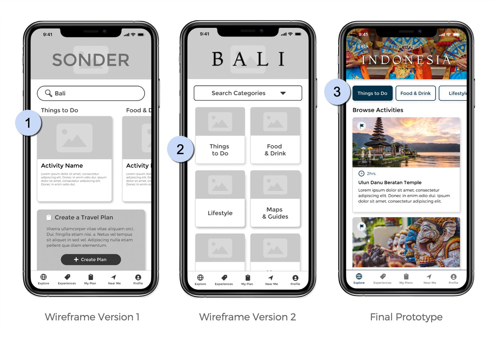
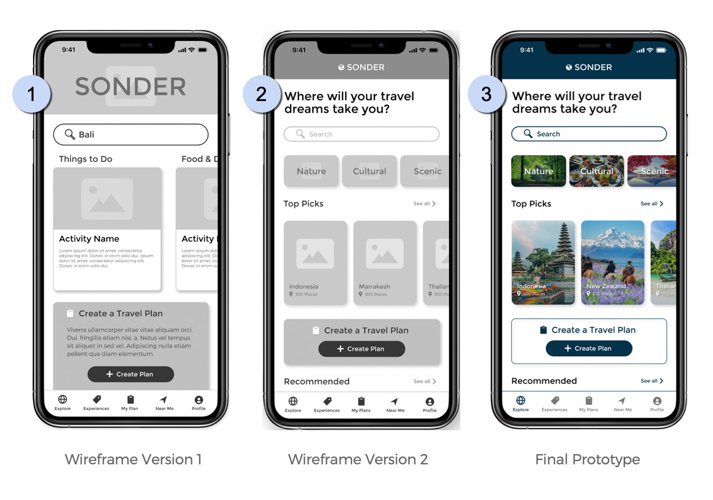
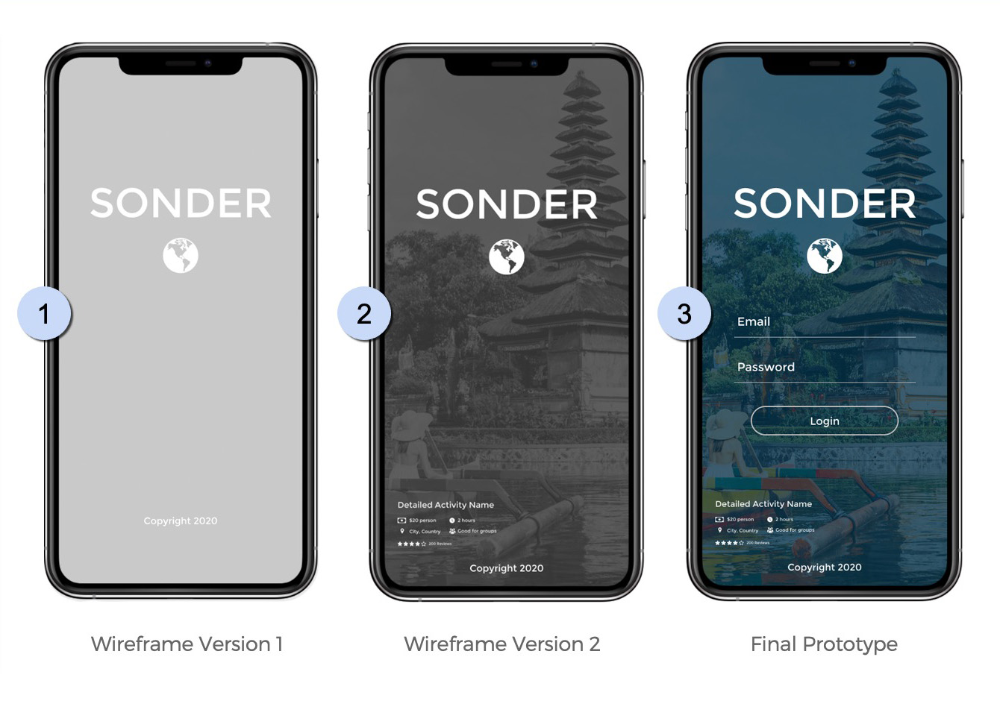

This project was especially timely as the Silverado fire was burning about 3 miles away from my house at the time, which was part of the reason why we focused on evaluating how easy it was to find wildfire information on the NWS website. It was on everyone's mind.
We planned and conducted 6 interviews with users who were also in the area of the actively burning fires. Users were asked their first impressions of the website as well as to find information related to wildfires in their area.
All users expressed problems navigating through the current website in general, as well the issues outlined below:
UX/UI Design | August, 2020
National Weather Service
Government Agency Redesign
Bootcamp Project | Case Study
My Role
User Research, Definition & Ideation, Wireframing, Prototyping, Usability Testing
Partner
Danielle Bridgewater: User Research, Definition & Ideation
Tools
Figma, Miro, Google Docs
Timeframe
4 Weeks
Problem
The National Weather Service website was created to provide weather, water, and climate data, forecasts and warnings for the protection of life and property and enhancement of the national economy. The website appears to be difficult to navigate and is in need of a redesign.
Solution
Redesign the National Weather Service website to help users easily find information related to severe weather and wildfires in their area.
User Research
Homepage
- Current wildfire info is not obvious
- Evacuation orders are not easy to find
Navigation
- Couldn’t find link to active wildfires
- Order of links is confusing (IA)
Search
- Should auto-detect user location
Homepage Map
- Users were unsure what to do on the map
- Add zoom controls to map
- Map legend is too small
Fire Map
- Fire map is hard to find
- Add zoom controls to map
- Map legend is too small
User Path
Currently, the user needs to select the 'Wildfire' link from 20 others in the 'Safety' section of the main menu, then navigate through three screens before they get to detailed fire information like the actual fire location on a map, evacuation orders, and containment:
The current website is not responsive and does not have a mobile menu. Therefore the user path to find wildfire information is more challenging. On mobile, the user must blind select the 'Safety' link from the main menu, then navigate through four screens before getting to detailed fire information:
Heuristic Analysis
Primary Navigation
Primary navigation is bloated with some dropdowns containing up to 20 links with some very similar, almost duplicate entries
Secondary Navigation
The location of the secondary nav looks like it should be related to the map just below it, but it’s not
Search
Clicking on the link in the primary navigation takes the user to a separate page where the only thing on it is a search box
Footer
The footer navigation is overwhelming and hard to traverse
Ideation
After empathizing with our users and defining the problem, we set about coming up with solutions to help users find accurate severe weather and wildfire information from the National Weather Service website.
User Insight Statement:
Samantha is a busy real estate agent from Santa Clarita, CA. She visits the National Weather Service website frequently to stay informed about severe weather and wildfires for her job, her family, and her health. She needs to find accurate severe weather and wildfire information quickly and easily while on the go.
Feature Prioritization
Interview data was compiled into an Affinity Diagram and Empathy map. From these we created a feature prioritization matrix where we identified the major pain points users had when completing the research tasks of finding accurate severe weather and wildfire information on www.weather.gov.
Most important to Users:
- Site is outdated and hard to navigate
- Evacuation/Urgent info not prominent
- Add zoom controls to homepage map
- Website should auto update user’s location
- Fire map is hard to find
Most important to Gov't Agency:
- Homepage is outdated/confusing
- No specific wildfire info on homepage
- Website should auto update user’s location
Card Sorting
The existing / original sitemap had eight primary categories with up to as many as twenty secondary links. This created more work for the user to try to sort through each category hunting for the topic they were looking for.
Original Sitemap
After performing card sorting, we simplified the navigation by creating four primary categories that grouped similar pages along with sub-groups to further organize content. This made it much easier for users to find what they are looking for.
Updated Sitemap
Prototype / Wireframes
I'm working solo from this point on in the project.
Style Guide
Working from the user path, I sketched wireframes to reflect the user's flow of searching for find accurate severe weather and wildfire information.

Wireframe Sketches / Desktop
Working from the user path, I sketched wireframes to reflect the user's flow of searching for find accurate severe weather and wildfire information.
Final Desktop Prototype
Wireframe Sketches / Mobile
The current website is not responsive and does not have a mobile menu. So I made sure to include a mobile menu overlay in the wireframe sketches and prototype.
Final Mobile Prototype
Usability Testing
5 Usability tests were conducted using a combination of the Concurrent Think Aloud (CTA) method and the Concurrent Prodding (CP) moderation method.
Goal
Discover how easy it is for users to search for a destination, find an activity to do at their chosen destination, add their chosen activity to their travel plan and/or create a new travel plan.
Assumptions - the user:
- Has access to reliable WiFi or cell data and no connection problems
- Has adequate budget, vacation time and motivation to travel
- Is looking for cultural activities to do on an upcoming vacation
- Is ok with the duration and price of the activity
- Already has an account and knows their password
- Is not familiar with how the app functions
Constraints - the user:
- Can only view information and book one activity at a time
- Can only add one activity to a travel plan at a time
- Can only create one travel plan at a time
- Search results only return Indonesia as pre-filled destination created for this prototype
- Other features like “Experiences”, “Near Me, and “Profile” were not built out as part of this prototype
Iterations Based on Testing Feedback:
In the first wireframe version, the user would select either an activity or a destination on the home screen (#1). They were then presented with a category screen to choose an activity category (#2). A tester stated this layout was confusing, that the categories and activities should be combined into one screen and “made obvious”.
In the final design (#3), top level categories were added in a horizontal slider above the activities seen by the user after they select a travel destination.

In the final design (#3), top level categories were added in a horizontal slider above the activities seen by the user after they select a travel destination.
In the first version of the lo-fi wireframes, there weren’t clear instructions on the home screen telling the user what action to take (#1). This was pointed out by testers and corrected in version two by adding the “Where will your travel dreams take you?” call to action directly under the header as the first thing the user sees (#2). This can also be seen in the final hi-fidelity version of the prototype (#3).

In the first and second version of the lo-fi wireframes, there was no input area for login information (#1 & #2). It was purposefully left out because onboarding was not a part of this user flow, however, testers stated that this seemed strange.
An input area for user login information was added along with a login button to the final prototype version (#3).

An input area for user login information was added along with a login button to the final prototype version (#3).
Conclusion
My plan for the design of this app was to create a modern UI that would delight users while allowing them to easily navigate and solve the problem we identified in the User Research and Definition phase of this project.
The result was a modular, multi-directional scrollable, card based mobile layout with bottom main navigation to allow the user to see and experience the content.
The result was a modular, multi-directional scrollable, card based mobile layout with bottom main navigation to allow the user to see and experience the content.
Next Steps:
- Build out other features like “Experiences”, “Near Me, and “Profile”
- Add more travel destinations
- Ability to recall saved travel plans
- Ability to save payment methods